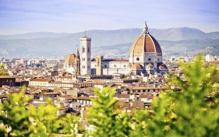

Rome,Italy

Roma is a can't-miss spot on your trip to Europe. The aroma of fresh Italian cooking wafts through the alleys, and historical sites stand proudly at every turn. No visit to Italy's capital would be complete without checking out the Colosseum, St. Peter's Basilica, the Sistine Chapel and the awe-inspiring Trevi Fountain. If you have additional time, venture beyond the main sights to the Roman Forum, Trastevere and the Spanish Steps.
London,U.K

Exploring the world-class British Museum, seeing a musical in the West End, touring the Tower of London and gorging on fish and chips at a local pub are all part of the London bucket list experience. However, London's high hotel prices can make budget travelers cringe. To save some money, book your accommodations far in advance or consider a vacation rental
Paris,France

Paris is filled with highly regarded museums, monuments and churches. You could easily spend your entire vacation admiring iconic sights like the Eiffel Tower and wandering through exhibits at the Louvre. Still, you should save some time for people-watching and munching on fresh croissants at sidewalk cafes during the day. Once the sun sets, sit down for a drawn-out meal with amazing wine.
Florence,Italy
Travel to Firenze for an authentic taste of Italy. Florence boasts top-notch museums, quaint hotels, stunning architecture and mouthwatering cuisine. Must-dos include admiring Michelangelo's David at the Galleria dell'Accademia, taking in city and river views from the Ponte Vecchio and climbing to the top of the Duomo – Florence's most recognizable attraction. When hunger strikes, head to the Mercato Centrale Firenze to stock up on fresh meats and cheeses or sit down for pizza or gelato.
Barcelona,Spain

Barcelona's diverse architecture sets the city apart from other European destinations. Gaudí's Park Güell and La Sagrada Familia are beyond impressive, as are Catedral de Barcelona (also known as La Seu), Montjuïc Castle and the many medieval buildings in the Gothic Quarter. When you tire of taking in the city's stunning architecture, relax on La Barceloneta beach, eat local food (tapas) or sip sangria along Las Ramblas